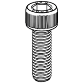
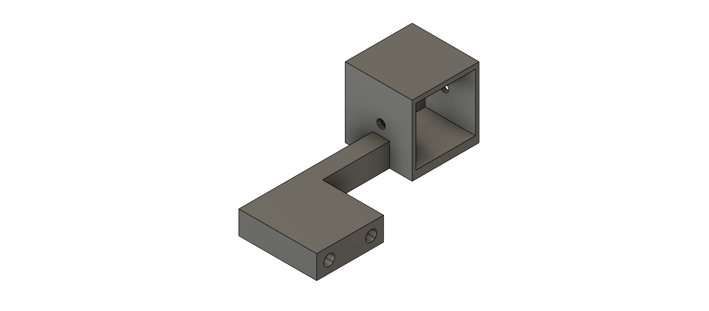
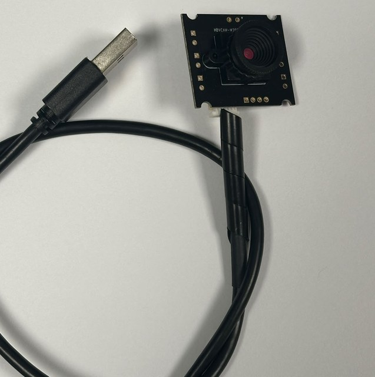
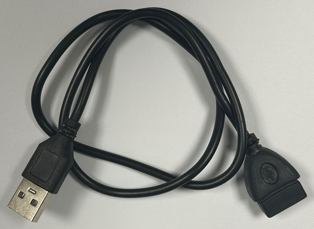
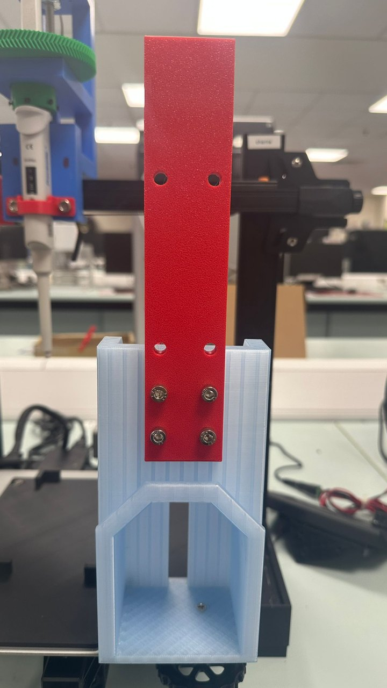
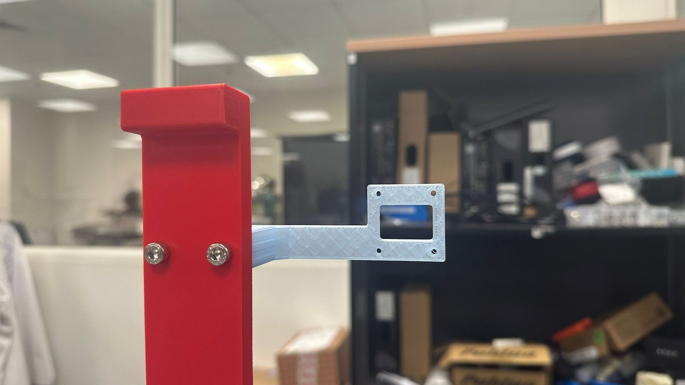
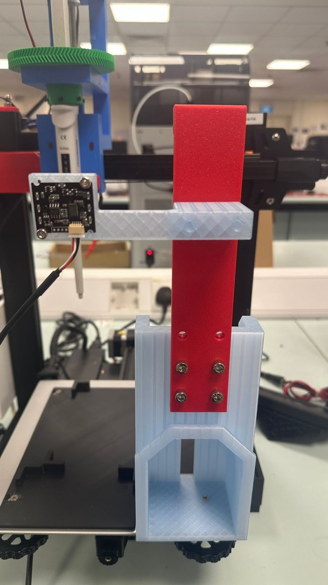
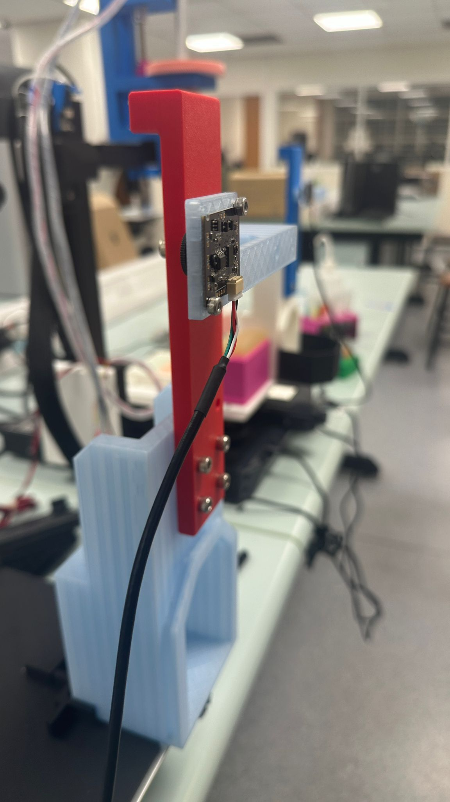

Assembly · Sub-step 3 of 4
Installing the Tip Ejector and Camera Mount
Fit the tip ejector mechanism and mount the onboard camera.
You will need

M5 x 20mmx 4
M5 x
20–45mm
x 2
20–45mm
x 2
M3 x 4mm
x 4
x 4
Tip Ejector
Camera Mount

USB Camera

USB extension
(if needed)

Instructions
-
First attach the Tip Ejector to the Tip Disposal. Use the bottom 4 holes and 4x M5 20mm screws.

Figure 1: The tip ejector bolted to the tip disposal. The screws go through the bottom four holes — the upper holes stay empty. -
Next, attach the Camera Mount, use 2x M5 screws of length anywhere from 20mm to 40mm.

Figure 2: The camera mount screwed to the tip ejector, with the window that holds the camera facing outwards. -
Finally, attach the USB Camera, use 4x M3 4mm screws.

Figure 3: The finished assembly in place, with the camera board fixed into the mount and its lead routed clear of the ejector. Assembly -
The assembly shpuld look like this.

Figure 4: Final setup. - You will need a USB extension for your USB Camera if the cable is too short to reach your computer. A short cable carries the RISK of dragging the laptop along with it when the bed plate moves. Pro-tip: one of our extensions was faulty and was giving us an out of focus image, replace the extension if you face the same problem.